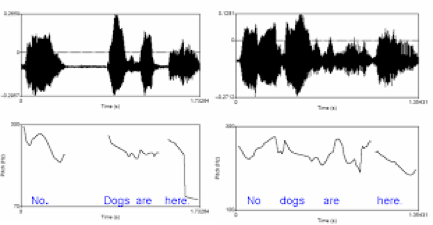
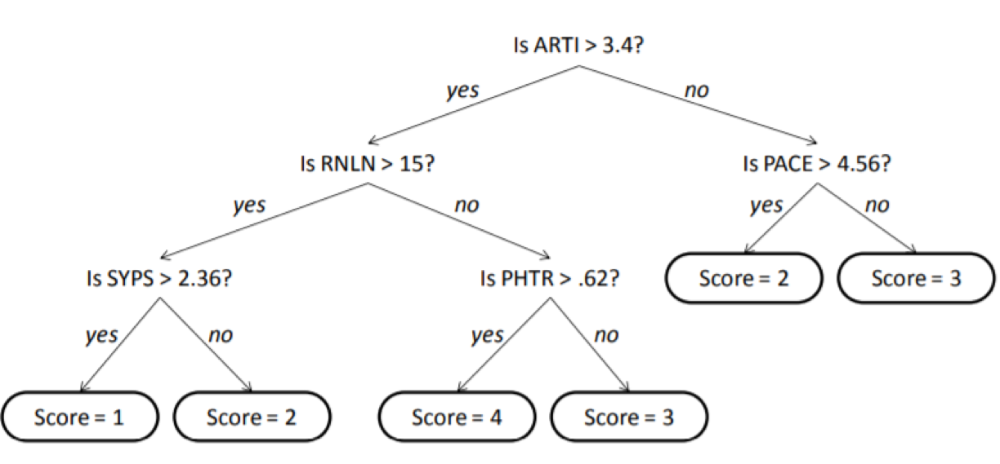
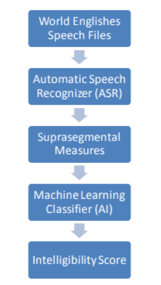

We love linguistic analytics.
The goal of this company is twofold: develop a prosodic labeler based on the ToBI (Tone and Break Indices) speech annotation model and provide a web portal for users to upload audio samples for analysis with the new labeler. The new prosodic labeler will function similarly to the previous labeler based on the Brazil model in that it will receive audio samples, identify different features based on prosodic measures and then return a proficiency score of the speaker based on the audio sample.Josh Shaffer
Coder, Customer Communicator, Team Website, Printer
Luis Montes
Coder (Node.js), Release Manager, Code Reviewer
Erik Strauss
Coder (Matlab), Team Website, Architect
Matthew Quintana
Coder, Recorder, Editor
An overview
Most people probably don't think about it but when you are speaking with someone and your tone doesn't match theirs they will start to pick up on that and it will cause an awkwardness or distance between you two. This is especially true with non-native english speakers that have a hard time not only speaking the language but picking up on certain aspects of language such as sarcasm, sincerity, compassion, or emphasis. Thats where our project comes in to play because the goal is to basically analyze prosody which is the patterns of stress and intonation in speech. This is important so that the speaker and researchers can better understand these parts of speech and learn from the results. Dr. Okim our client/sponsor is interested in comparing two frameworks which are currently used today to analyze prosody one being David Brazil's model which is the one she has studied and thinks is the most accurate when it comes to conversational speech. The other framework being ToBI(Tones and Break Indices) which is a more popular system for analyzing prosody developed by researchers at MIT and is more reckognized and established than David Brazil's model.

A typical Prosodic labeling program running.
High Level Requirements
The way the computer will score an audio file will be by using a binary tree. The exact semantics have yet to be discussed, but essentially when the computer gets a score for one measurement it will branch off in a certain way. It will then find another measurement and branch again. It will go until it determines the final score. A diagram of this can be seen below:


After the suprasegmental measurements have been scored, the results are compared to the human scores for accuracy. Depending on the accuracy of the machine scores, the audio sample will be analyzed again, but with a different set of suprasegmental measures until the accuracy reaches a high enough threshold. The full mechanics of the program are illustrated as well.
The program will be split into two parts using two different languages. First off, we plan to use Java along with to ToBI framework to extract the prosodic features present in the audio file. The second half will be using MATLAB to design the scoring and machine-learning sections of the program.
The existing code is in C++ and MATLAB, but the C++ is in a linux environment whereas the MATLAB is in a windows environment. So we are using Java instead of C++ so it would be easier to run in one environment. Dr. Johnson, who programmed the current system, believes this is a good approach to implementing the ToBI version.
High Level Design Philosphy and Concept
The goal of the project is twofold: develop a prosodic labeler based on the ToBI (Tone and Break Indices) speech annotation model and provide a web portal for users to upload audio samples for analysis with the new labeler. The new prosodic labeler will function similarly to the previous labeler based on the Brazil model in that it will receive audio samples, identify different features based on prosodic measures and then return a proficiency score of the speaker based on the audio sample.
Some goals for the web portal we have are:
Technologies
The Project has two main parts being the Prosodic Labeling Chain, and the web portal.
Schedule
| Assignment | Due Date | Compeletion Status |
|---|---|---|
| Prosodic Labeling Chain | December 14, 2017 | In Progress |
| Web Portal for Prosodic Labeling Chain | TBD | Must finish more recent first. |
| Unit Testing the Web Portal | TBD | Must finish more first. |
Need to get in contact?